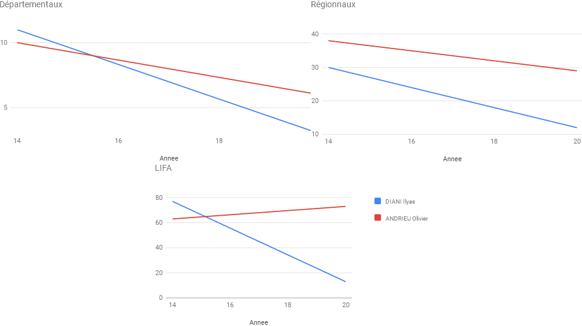

1. Pourquoi et comment étudier des résultats de cross
Le cross est école de la vie. Le goût de l'effort, de la lutte, de la sueur et des larmes ; de persévérance ; d'amour du maillot du club et d'esprit d'équipe ; d'une pratique populaire à l'opposé des sports élitistes de riches ; de rapprochement avec la nature ; enfin du travail foncier pour la piste l'été.
Promouvoir cette belle discipline est faire oeuvre d'intérêt public. Il y a en a besoin. Quand on compare le nombre de lignes consacrée dans l'Equipe avec le moindre état d'âme de Neymar... Ou quand on compare la facilité d'annuler un championnat de France de cross pendant qu'on maintient les matchs de foot...
Donc, étudions ici les résultats des championnats départementaux du Val-de-Marne, des régionaux zone Est et interrégionaux LIFA de cross, période 2010-2020.
Propriété des données athlé
Les résultats des championnats de cross sont publiques. Cependant, se pose la question de la propriété. Si une boîte privée avait la bonne idée de récupérer les données pour faire du blé, il y aurait un problème. Un peu comme Google Actualités qui génère des revenus publicitaires sur le dos de la presse nationale - et qui plus avec évasion fiscale. Ou comme le marché d'exploitation des données de santé, Amazon en GB, demain peut-être Microsoft en France.
Ça c'est le monde capitaliste. L'usage ici des données athlé n'est pas destiné à faire du pognon. Juste le partage au sein de la famille des pratiquants du cross. Légalement, en attendant l'abolition de la propriété privée lucrative, l'accès aux données athlé devrait être libre sur le modèle des licences en informatique. Un code libre peut être utilisé librement à condition que le caractère libre soit conservé. Les analyses proposées ici sont libres de copie et de réutilisation pourvu que l'usage soit non commercial.
Le danger du détournement des données à visée de surveillance généralisée existe. Les compagnies d'assurance tentent depuis un moment de connaître la santé de leurs clients - avec adapation des contrats à la clé. Vos places aux championnats de cross est un bon indicateur de votre forme. Ça reste modeste avec Strava. Mais ça reste encore aimable plaisanterie d'amateur en comparaison de l'imagination de la société industrielle (les capitalistes ne sont pas les seuls partisans de ces « progrès », des communistes et trotskystes - salut amical en passant aux camarades de l'ex-Tendance Claire - le sont également). Dans le supplément Science & Médecine du Monde daté 4 mars 2020, on lit page 5 :
- Au Japon Symax Inc propose aux entreprise une analyse des urines en continu des salariés volontaires par un capteur dans les toilettes → PH urinaire et débit urinaire.
- Au Canada la startup Animo propose d'analyser les écrits des salariés volontaires (mail, messagerie instantanée) pour évaluer leur santé mentale → risque de burn-out, anxiété
- En France à l'aide d'un diagnostic en ligne, les salariés volontaires du programme Vitaly (Generali) cummulent des points et obtiennent des réductions et remises si leur état de forme s'améliore → alimentation, mode de vie, état de santé
- Aux États-Unis, à partir d'un selfie, Chronos, logiciel d'analyse faciale → âge, masse pondérale
Voyant cela, nul doute que les résultats d'athlé indicateur de santé et VO2 max seraient monneyables si la CNIL ne s'y opposerait pas. À moins que ce ne soit pas déjà le cas, je suis peut-être naïf. En période d'austérité, si la FFA se trouverait en manque de moyens, la tentation serait forte.
Compromis ou compromission
Compromis ou compromission, vieille question. Déjà le PC utilisé en ce moment même tourne sous Windows et fonctionne à électricité nucléaire. Et les graphiques des cross sont générés grâce aux librairies javascript Google, heureusement disponibles sous licence libre. Ça c'est très pratique. C'est avec regret que j'ai du renoncer à publier d'autres graphiques utilisant des librairies Northwood Software, très bonnes aussi mais payantes (et chères). Dilemmes...
Par association d'idées, on pourrait avoir envie de demander à la FFA les raisons du choix d'utiliser Microsoft pour son site et base de données. Les contrats sont payés sur fonds publics et cotisations des licenciés et clubs, il n'est pas illégitime de demander à examiner les appels d'offres de marché public. Le choix Linux & MySQL pourrait être meilleur techniquement et accessoirement plus économe et plus conforme à l'idée de service publique.
Toujours à propos de boue, il est permis de s'étonner de voir aux derniers championnats LIFA de cross se mélanger aux athlètes normalement qualifiés quelques concurrents de sport en entreprise. En plus, de la banque Société Générale. L'explication de cette incongruité serait financière ?
La place des sponsors peut aussi troubler. Par exemple, il y a quelques années Ariva s'affichait sur le maillot bleu. Un déclin de sélection pour cette raison aurait été compréhensible. Un autre exemple édifiant aux US en 2015.
Nick Symmons n'avait pas participé aux championnats du Monde bien que qualifié sur 800 mais exclu de l'équipe nationale US pour conflit entre le sponsor officiel Nike et son sponsor perso, Brooks. Pourquoi tolérer le pouvoir des sponsors ?
Plus récement, pourquoi accepter de participer à un championnat du monde au Qatar dans stade climatisé, hérésie écologique ?
2. Requêtes
Plus médaillés
⚠ Calcul classement en amont pour recalculer les classements féminins à cause mélange senior / master / junior.SELECT nom, count(*) AS nb_podium, GROUP_CONCAT(annee, ' ', rang SEPARATOR ', ') AS podium
FROM cros WHERE championnat= 'dep' AND rang IN (1,2,3)
GROUP BY nom ORDER BY nb_podium DESC| nom | nb | podium |
|---|---|---|
| BOUBEKEUR Achour | 4 | 2017 1 2012 2 2018 1 2014 3 |
| KERROUA Yanis | 4 | 2018 3 2013 3 2017 1 2014 2 |
| BENHAMOU Michael | 3 | 2018 2 2017 2 2013 1 |
| DORGAN Florence | 3 | 2013 3 2010 3 2012 1 |
| BEAUFORT Sebastien | 2 | 2020 2 2018 3 |
| BENNACER Mustapha (Alg) | 2 | 2012 1 2010 1 |
| CHOUKRI Mohamed | 2 | 2012 2 2017 3 |
| GILBERT Frederic | 2 | 2014 1 2012 1 |
| NARDI COLOME Franck | 2 | 2020 1 2014 3 |
| VINDEX Jean-philippe | 2 | 2013 3 2014 2 |
| nom | nb | podium |
|---|---|---|
| FAVIER Francois-rene | 5 | 2018 1 2019 2 2017 1 2014 1 2020 3 |
| BOUBEKEUR Achour | 3 | 2017 2 2013 3 2012 2 |
| KUMBI BECHERE Tura (Eth) | 3 | 2020 1 2013 1 2019 1 |
| BENNACER Mustapha (Alg) | 2 | 2010 2 2012 1 |
| BLAUT Garance | 2 | 2018 2 2017 3 |
| BOUAGGAD Hanane (Mar) | 2 | 2019 2 2020 1 |
| DIDOVODIUK Olesia (Ukr) | 2 | 2017 1 2018 3 |
| DJEMADI Abderrahmane (Alg) | 2 | 2012 1 2010 1 |
| FRERE Mehdi | 2 | 2018 3 2017 3 |
| GILBERT Frederic | 2 | 2013 1 2012 2 |
| JACQUERAY Diony | 2 | 2010 3 2012 3 |
| LEGRAND Marion | 2 | 2019 1 2020 3 |
| nom | nb | podium |
|---|---|---|
| FAVIER Francois-rene | 4 | 2014 2 2019 3 2017 2 2018 1 |
| KHEZZANE Noreddine | 4 | 2012 2 2017 3 2010 2 2013 3 |
| CHACHIGNON Mathilde | 3 | 2012 2 2014 3 2017 2 |
| MYKHAILOVA Daria (Ukr) | 3 | 2019 1 2020 2 2018 1 |
| AMDOUNI Morhad | 2 | 2017 1 2018 1 |
| BOUCHARD Marie | 2 | 2020 1 2019 2 |
| BOUCHIKHI Soufiane (Bel) | 2 | 2018 2 2019 1 |
| DJEMADI Abderrahmane (Alg) | 2 | 2012 1 2010 1 |
| JEMMAL Abdelghani | 2 | 2018 3 2017 1 |
| LEDHEM Fadouwa | 2 | 2018 2 2014 2 |
| MEKDAFOU Youssef | 2 | 2017 3 2014 1 |
| MERED Meriem | 2 | 2013 1 2012 1 |
| MEZEGHRANE-SAAD Samira | 2 | 2014 1 2017 3 |
| SADI Ali | 2 | 2020 1 2019 2 |
Plus grand écart 1er et 2nd
SELECT c1.nom, c2.nom, c1.championnat, c1.annee, (SUBSTRING(c2.chrono, 1,2) * 60) + SUBSTRING(c2.chrono, 4) - (SUBSTRING(c1.chrono, 1,2) * 60) - SUBSTRING(c1.chrono, 4) AS ecart FROM cros c1
JOIN cros c2 ON c2.rang = 2 AND c1.annee = c2.annee AND c1.championnat = c2.championnat AND c1.sexe = c2.sexe AND c1.id != c2.id
WHERE c1.rang = 1 AND SUBSTRING(c1.cat,1,1) = SUBSTRING(c2.cat,1,1)
ORDER BY ecart DESC| nom | nom | championnat | annee | ecart |
|---|---|---|---|---|
| AMDOUNI Morhad | MEKDAFOU Youssef | lifa | 2016 | 107 |
| MAROUFIT Mourad (MAR) | GAYANT Brice | dep | 2019 | 81 |
| DOUKKANA Rabii (Mar) | GRUNDTNER Willy | dep | 2016 | 77 |
| FAVIER Francois-rene | CARANTON Laurent | dep | 2019 | 57 |
| FAVIER Francois-rene | BOUBEKEUR Achour | reg | 2017 | 53 |
| BOUCHIKHI Soufiane (Bel) | MAROUFIT Mourad (MAR) | lifa | 2019 | 45 |
| HATTOUCHI Mohamed (Mar) | OMARAT Brahim (Mar) | reg | 2016 | 44 |
| KERROUA Yanis | SAGE Jerome | dep | 2017 | 42 |
| AMDOUNI Morhad | IBRAHIMOV Hayle (Aze) | lifa | 2017 | 39 |
| GILBERT Frederic | CHOUKRI Mohamed | dep | 2012 | 37 |
| DORGAN Florence | ESPRIT Augustina | dep | 2012 | 37 |
| FAVIER Francois-rene | CHAREIL Ken | reg | 2018 | 33 |
| SADI Ali | PREIRA William | lifa | 2020 | 33 |
| MARTINO Azeline | TRUEL Aurelia | reg | 2014 | 33 |
| GUERFI Riad | KENOUCHE Abdelslam | lifa | 2012 | 28 |
| BENNACER Mustapha (Alg) | BOUBEKEUR Achour | reg | 2012 | 27 |
| KUMBI BECHERE Tura (Eth) | RAYNAUD Bertrand | reg | 2020 | 27 |
| YAHI Nawal (Alg) | BLAUT Garance | reg | 2018 | 25 |
| BENGHERDA Hicham (Alg) | GUERFI Riad | reg | 2017 | 25 |
| ZEROUAL Larbi | FAVIER Francois-rene | lifa | 2014 | 24 |
| KUMBI BECHERE Tura (Eth) | FAVIER Francois-rene | reg | 2019 | 23 |
| FAVIER Francois-rene | VINDEX Jean-philippe | reg | 2015 | 22 |
| LEQUITTE-CHARRANSOL Perrine | EL GMIRI Kebira (Mar) | dep | 2019 | 21 |
| DJEMADI Abderrahmane (Alg) | KHELAF Kamal (Alg) | reg | 2010 | 20 |
| YAHI Nawal (Alg) | CHACHIGNON Mathilde | lifa | 2017 | 20 |
| BENNACER Mustapha (Alg) | KERROUT Mounir | dep | 2010 | 19 |
| BOUBEKEUR Achour | BENHAMOU Michael | dep | 2017 | 18 |
| KUMBI BECHERE Tura (Eth) | SADI Ali | lifa | 2019 | 18 |
| BENNACER Mustapha (Alg) | BOUBEKEUR Achour | dep | 2012 | 16 |
| DJEMADI Abderrahmane (Alg) | GILBERT Frederic | reg | 2012 | 16 |
| GUTTIN Nicolas | ROUSSEAU Benjamin | dep | 2013 | 15 |
| BENGHERDA Mahieddine (Alg) | COMINGES Cyrille | lifa | 2013 | 14 |
| FAVIER Francois-rene | CHAREIL Ken | lifa | 2018 | 13 |
| MYKHAILOVA Daria (Ukr) | LEDHEM Fadouwa | lifa | 2018 | 12 |
| JEMMAL Abdelghani | CHEVAL Gregory | lifa | 2016 | 12 |
| MARTINO Azeline | AKROUNE Nadia | reg | 2015 | 12 |
| FAVIER Francois-rene | VINDEX Jean-philippe | reg | 2014 | 10 |
Plus grand nombre de participations LIFA (athlètes)
SELECT nom, GROUP_CONCAT(annee, ''), count(*) AS participation FROM cros WHERE championnat = 'lifa'
GROUP BY nom ORDER BY participation DESC| JAEGER Emmanuelle | 2018,2015,2016,2012,2010,2020,2014,2019,2013,2017 | 10 |
| RUIZ Pascal | 2017,2018,2015,2016,2020,2010,2012,2014,2019,2013 | 10 |
| BEN-HOUDJA Mohammed | 2017,2018,2015,2020,2010,2012,2014,2019,2013 | 9 |
| CHACHIGNON Mathilde | 2012,2010,2020,2014,2019,2017,2018,2015,2016 | 9 |
| CHOUKRI Mohamed | 2010,2012,2014,2019,2013,2017,2018,2015,2016 | 9 |
| GAUGE Sandrine | 2012,2010,2020,2014,2013,2017,2018,2015,2016 | 9 |
| GHIANI Marc | 2020,2012,2014,2019,2013,2017,2018,2015,2016 | 9 |
| LE MOING Veronique | 2017,2018,2015,2016,2012,2010,2020,2014,2019 | 9 |
| ALLAM Agnes | 2018,2015,2016,2020,2014,2019,2013,2017 | 8 |
| CARANTON Laurent | 2017,2018,2015,2016,2020,2010,2014,2019 | 8 |
| CHAREIL Ken | 2017,2018,2016,2020,2010,2012,2014,2019 | 8 |
| COURJAL Yannick | 2017,2018,2015,2016,2020,2012,2014,2019 | 8 |
| ESPRIT Augustina | 2012,2010,2014,2013,2017,2018,2015,2016 | 8 |
| GUEGANO Raphael | 2020,2010,2012,2019,2013,2017,2018,2016 | 8 |
| HERCOUET Didier | 2017,2018,2015,2016,2010,2012,2014,2013 | 8 |
| JACQUERAY Severine | 2012,2010,2020,2014,2019,2013,2017,2015 | 8 |
| KHEZZANE Noreddine | 2010,2012,2014,2019,2013,2017,2018,2015 | 8 |
| LANDEMAINE Jean-christophe | 2017,2015,2016,2010,2012,2014,2019,2013 | 8 |
| LE QUERRE Fabrice | 2017,2015,2016,2020,2012,2014,2019,2013 | 8 |
| MARTINO Azeline | 2018,2015,2010,2020,2014,2019,2013,2017 | 8 |
| MULL-JOCHEM Mireille | 2012,2010,2020,2014,2019,2017,2018,2015 | 8 |
| PELLETIER Gilles | 2010,2012,2014,2019,2013,2017,2015,2016 | 8 |
| RAMZI Houcine | 2020,2014,2019,2013,2017,2018,2015,2016 | 8 |
| SAILLY Patrice | 2017,2018,2015,2016,2012,2014,2019,2013 | 8 |
| VIDAL Patrick | 2017,2018,2015,2016,2020,2010,2012,2013 | 8 |
| WEILER Veronique | 2018,2015,2016,2012,2010,2014,2013,2017 | 8 |
| ALEXANDRE Christian | 2020,2010,2012,2014,2013,2018,2015 | 7 |
| ANDRIEU Olivier | 2020,2010,2012,2014,2018,2015,2016 | 7 |
| BARBETTE Frederic | 2017,2015,2016,2012,2014,2019,2013 | 7 |
| BAUDRY Bernard | 2020,2012,2014,2019,2013,2017,2015 | 7 |
| BENHAMOU Michael | 2020,2014,2019,2013,2017,2018,2015 | 7 |
| BERGOGNER Clarisse | 2017,2018,2015,2016,2020,2014,2019 | 7 |
| CLEMONT Mathilde | 2010,2020,2014,2019,2013,2018,2016 | 7 |
| COURNUT Aurelie | 2012,2020,2013,2017,2018,2015,2016 | 7 |
| CROIZIER Lilian | 2020,2012,2013,2017,2018,2015,2016 | 7 |
| DA SILVA Brigitte | 2015,2016,2012,2010,2020,2014,2019 | 7 |
| DUCROT Joel | 2010,2012,2014,2017,2018,2015,2016 | 7 |
| EL YAMANI Mohammed | 2020,2014,2013,2017,2018,2015,2016 | 7 |
| EL-FILALI Mostafa | 2017,2016,2010,2012,2014,2019,2013 | 7 |
| FARIA Rolando | 2020,2010,2014,2019,2017,2015,2016 | 7 |
| FAVELIN Christine | 2012,2014,2013,2017,2018,2015,2016 | 7 |
| FAVIER Francois-rene | 2017,2018,2015,2020,2012,2014,2019 | 7 |
| GANCE Catherine | 2010,2020,2014,2019,2017,2018,2016 | 7 |
| GINER Wilfried | 2020,2010,2012,2014,2019,2018,2015 | 7 |
| IVOY Marianne | 2012,2014,2013,2017,2018,2015,2016 | 7 |
| JARRY Alain | 2017,2015,2016,2020,2010,2012,2014 | 7 |
| LACHEREST Sebastien | 2017,2018,2015,2016,2020,2010,2019 | 7 |
| LAPORTE Kevin | 2017,2018,2016,2010,2012,2014,2019 | 7 |
| LAZAREVIC Philippe | 2010,2012,2014,2019,2013,2015,2016 | 7 |
| LECIEUX Thomas | 2017,2018,2015,2016,2020,2014,2019 | 7 |
| LOMBARDOT Yann | 2010,2012,2014,2019,2017,2018,2015 | 7 |
| MAROLLES Frederic | 2017,2018,2015,2016,2010,2019,2013 | 7 |
| MOUSSET Elisabeth | 2012,2010,2014,2013,2018,2015,2016 | 7 |
| PAILLUSSON Christophe | 2017,2018,2015,2010,2012,2014,2019 | 7 |
| PAPPALARDO Thierry | 2010,2012,2014,2017,2018,2015,2016 | 7 |
| PINET Cyril | 2017,2015,2010,2012,2014,2019,2013 | 7 |
| QUEMENER Anais | 2012,2020,2014,2019,2013,2017,2015 | 7 |
| RAPICAULT Benoit | 2010,2012,2014,2013,2018,2015,2016 | 7 |
| ROSSE Sebastien | 2020,2012,2014,2013,2017,2015,2016 | 7 |
| ROUYER Thomas | 2020,2014,2019,2013,2017,2018,2016 | 7 |
| SMITH Julien | 2017,2015,2016,2010,2014,2019,2013 | 7 |
| WIEDEMANN Sophie | 2017,2018,2015,2016,2020,2014,2019 | 7 |
| AKROUNE Camilia | 2012,2010,2020,2017,2018,2015 | 6 |
| AMOSSE Yannick | 2010,2012,2013,2017,2018,2016 | 6 |
| BELAIR Rosalie | 2015,2016,2010,2020,2014,2019 | 6 |
| BERNARD Laura | 2015,2016,2012,2020,2014,2013 | 6 |
| BOUMAZA Mohamed | 2017,2015,2016,2012,2014,2019 | 6 |
| BOUQUET Aurelie | 2017,2018,2015,2012,2020,2014 | 6 |
| CHARPENTIER Jeremie | 2017,2018,2015,2016,2010,2012 | 6 |
| CHASLIN Florine | 2012,2010,2014,2017,2018,2016 | 6 |
| CHERY Sebastien | 2015,2016,2010,2012,2014,2013 | 6 |
| COLMAR Caroline | 2015,2016,2012,2020,2014,2013 | 6 |
| COMPAIN Gaetan | 2020,2010,2014,2017,2018,2015 | 6 |
| DA SILVA Jose carlos | 2015,2016,2020,2010,2012,2013 | 6 |
| DALE Helen | 2017,2015,2016,2012,2010,2014 | 6 |
| DANAILOV Elitsa (Bul) | 2012,2020,2013,2017,2015,2016 | 6 |
| DAUVILLIERS Sebastien | 2018,2015,2020,2014,2019,2013 | 6 |
| DJEMADI Abderrahmane (Alg) | 2010,2012,2014,2013,2017,2015 | 6 |
| DORGAN Florence | 2015,2012,2010,2014,2013,2017 | 6 |
| DUHAUPAS Stephane | 2014,2013,2017,2018,2015,2016 | 6 |
| EP NHEP Xiu ming | 2014,2019,2017,2018,2015,2016 | 6 |
| FERREIRO Thibaut | 2014,2019,2017,2018,2015,2016 | 6 |
| GRUNDTNER Willy | 2020,2010,2012,2014,2019,2016 | 6 |
| GUIMOND Pascal | 2015,2016,2010,2012,2014,2013 | 6 |
| HANNOUDI Mounir | 2017,2018,2020,2012,2014,2019 | 6 |
| JEMMAL Abdelghani | 2012,2014,2017,2018,2015,2016 | 6 |
| LAMINE Moustapha (Mar) | 2020,2010,2012,2014,2013,2015 | 6 |
| LEY Myriam | 2017,2015,2016,2012,2010,2013 | 6 |
| LIEBART Stephanie | 2012,2020,2019,2017,2018,2016 | 6 |
| MAAMOUZ Ahmed | 2018,2015,2016,2012,2014,2019 | 6 |
| MAIRESSE Jean-baptiste | 2015,2016,2020,2010,2014,2019 | 6 |
| MARCOVICI Jean-baptiste | 2020,2014,2019,2017,2015,2016 | 6 |
| MERROUNE Mohamed | 2020,2019,2017,2018,2015,2016 | 6 |
| MOUQUET Sylvain | 2020,2010,2014,2017,2018,2015 | 6 |
| NICOLAS TOUSSAINT Brigitte | 2012,2014,2017,2018,2015,2016 | 6 |
| NIGEN Gwendal | 2014,2019,2017,2018,2015,2016 | 6 |
| OULD Fabien | 2017,2015,2016,2020,2010,2012 | 6 |
| PERIAULT Leonie | 2018,2015,2016,2020,2014,2019 | 6 |
| POCREAUX Cyril | 2010,2012,2014,2013,2015,2016 | 6 |
| PROME Thomas | 2014,2019,2017,2018,2015,2016 | 6 |
| RICHARD Maxime | 2012,2014,2019,2017,2018,2016 | 6 |
| ROMAGNY Delphine | 2017,2018,2015,2016,2012,2014 | 6 |
| SAIM Ahmed (Alg) | 2014,2019,2017,2018,2015,2016 | 6 |
| TRENIER Sophie | 2012,2010,2020,2014,2013,2018 | 6 |
| TRUEL Aurelia | 2010,2020,2019,2013,2015,2016 | 6 |
| VERDOL Widdy | 2020,2019,2017,2018,2015,2016 | 6 |
| VIOLARD Frederic | 2020,2014,2019,2017,2015,2016 | 6 |
| ABACHAD Adil | 2017,2016,2020,2010,2019 | 5 |
| ABDELKADER Yann | 2020,2014,2017,2015,2016 | 5 |
| ADAO Manuel | 2020,2012,2019,2013,2017 | 5 |
| AHMIMID M hamed | 2017,2020,2014,2019,2013 | 5 |
| ALBERT Lucile | 2020,2014,2017,2018,2015 | 5 |
| ARMAND Gilles | 2020,2012,2018,2015,2016 | 5 |
| ARRAS Mohamed | 2017,2018,2015,2014,2019 | 5 |
| BARGET Yann | 2015,2016,2020,2012,2019 | 5 |
| BEAUFORT Sebastien | 2020,2019,2017,2018,2016 | 5 |
| BEGNIS Kevin | 2010,2019,2017,2018,2015 | 5 |
| BEL FRANQUESA Laura (Esp) | 2014,2019,2013,2015,2016 | 5 |
| BENGHERDA Hicham (Alg) | 2012,2014,2019,2017,2018 | 5 |
| BERTRAND Nicolas | 2017,2015,2010,2014,2013 | 5 |
| BLANCHARD Nicolas | 2017,2018,2016,2020,2019 | 5 |
| BLOTTIN James | 2010,2012,2013,2015,2016 | 5 |
| BODENANT Emilie | 2012,2014,2017,2015,2016 | 5 |
| BOUMAZA Naboulsy | 2014,2019,2018,2015,2016 | 5 |
| BOUTELOUP Celia | 2020,2019,2017,2018,2016 | 5 |
| BROCHOT Sandrine | 2015,2016,2020,2014,2013 | 5 |
| BROOKS Jerome | 2017,2015,2020,2012,2019 | 5 |
| BUISSON Denis | 2017,2015,2016,2020,2019 | 5 |
| CASAGRANDE-FIORETTI Florent | 2017,2018,2015,2016,2019 | 5 |
| CASSAGNES Mickael | 2017,2018,2015,2016,2014 | 5 |
| CHRETIEN Jean-marc | 2017,2015,2016,2010,2012 | 5 |
| CONIN Kevin | 2014,2019,2017,2015,2016 | 5 |
| COUTO Elias (Por) | 2010,2012,2014,2013,2015 | 5 |
| DABIN Olivier | 2019,2017,2018,2015,2016 | 5 |
| DEREX Francois | 2010,2012,2014,2013,2016 | 5 |
| DEVAUX Pascal | 2015,2010,2012,2014,2013 | 5 |
| DI SANZA Anne-claire | 2018,2015,2016,2020,2019 | 5 |
| DIANI Ilyas | 2018,2015,2020,2014,2019 | 5 |
| DIOT Eric | 2010,2019,2013,2015,2016 | 5 |
| DURIEUX Sylvie | 2018,2015,2016,2014,2017 | 5 |
| FAVREAU Nathalie | 2012,2010,2014,2015,2016 | 5 |
| FELLAH Kamel | 2014,2013,2017,2015,2016 | 5 |
| FOMBARLET Valerie | 2017,2016,2012,2010,2014 | 5 |
| FRADON Fanny | 2020,2019,2018,2015,2016 | 5 |
| GABELUS Henri | 2010,2012,2014,2019,2013 | 5 |
| GAUTHIER Anne-laure | 2012,2010,2013,2017,2018 | 5 |
| GHERMAOUI Jamel | 2010,2012,2014,2013,2017 | 5 |
| GINESTET Anne | 2015,2016,2020,2019,2017 | 5 |
| GIRARD Sebastien | 2012,2019,2017,2015,2016 | 5 |
| GRAND-PERRET Yoann | 2019,2017,2018,2015,2016 | 5 |
| GRANGE Nicolas | 2015,2016,2012,2014,2013 | 5 |
| GRAS Herve | 2017,2015,2010,2012,2013 | 5 |
| GRAZIANI KOULOU Zohra | 2012,2010,2014,2013,2015 | 5 |
| HUBERT Tony | 2017,2015,2012,2014,2019 | 5 |
| HUE Sylvain | 2020,2017,2018,2015,2016 | 5 |
| JBARA Youssef | 2010,2012,2014,2018,2015 | 5 |
| KERROUA Yanis | 2014,2019,2017,2018,2016 | 5 |
| KLEIN Agnes | 2017,2018,2015,2016,2019 | 5 |
| LE MOING Joel | 2010,2012,2019,2013,2016 | 5 |
| LECOMTE Benoit | 2018,2015,2010,2012,2014 | 5 |
| LEFEBVRE Herve | 2015,2010,2012,2014,2013 | 5 |
| LEFEBVRE Laurent | 2012,2014,2017,2018,2016 | 5 |
| LESENEY Cedric | 2017,2018,2016,2010,2012 | 5 |
| MARIANI Patricia | 2012,2010,2017,2015,2016 | 5 |
| MARTIN Jerome | 2014,2019,2017,2015,2016 | 5 |
| MARTINHO Ezequiel | 2020,2019,2017,2018,2016 | 5 |
| MAUGAND Jean-yves | 2010,2012,2014,2013,2016 | 5 |
| MAURY Hugo | 2012,2014,2018,2015,2016 | 5 |
| MEGHAZI Mhamed | 2020,2017,2018,2015,2016 | 5 |
| MEKDAFOU Youssef | 2014,2019,2017,2015,2016 | 5 |
| MERCIER Dominique | 2010,2012,2014,2013,2016 | 5 |
| MERED Meriem | 2012,2020,2019,2013,2018 | 5 |
| MESLIN Virginie | 2012,2010,2019,2015,2016 | 5 |
| MOREAU Stephane | 2017,2015,2016,2020,2013 | 5 |
| NARDI COLOME Franck | 2018,2015,2020,2014,2019 | 5 |
| NAVE Jean-baptiste | 2019,2017,2018,2015,2016 | 5 |
| NOIRY Julien | 2017,2018,2016,2020,2019 | 5 |
| OLIVIER Bruno | 2010,2014,2013,2015,2016 | 5 |
| OULD BASCOU Pauline | 2020,2019,2017,2018,2016 | 5 |
| PASQUET Olivier | 2018,2015,2016,2012,2014 | 5 |
| PERDIGAO Miguel | 2015,2016,2012,2014,2013 | 5 |
| PERREUX Sandrine | 2019,2013,2017,2018,2015 | 5 |
| PETITJEAN Nicolas | 2010,2019,2017,2018,2016 | 5 |
| PHILIZOT Olivier | 2015,2016,2012,2014,2013 | 5 |
| PORCIER Guillaume | 2010,2014,2017,2018,2015 | 5 |
| RAMBEAUX Isabelle | 2017,2015,2016,2014,2019 | 5 |
| RICHARD Emmanuel | 2010,2012,2014,2013,2016 | 5 |
| ROUAUD Christophe | 2010,2012,2014,2013,2017 | 5 |
| ROUGER Guillaume | 2014,2017,2018,2015,2016 | 5 |
| SAHEB Otmane | 2017,2015,2016,2014,2019 | 5 |
| TAURAN Sandrine | 2020,2019,2013,2018,2015 | 5 |
| TRENIER Solene | 2012,2010,2020,2014,2013 | 5 |
| VERDURE Annie | 2015,2012,2010,2014,2013 | 5 |
| VILFEU Ludovic | 2017,2015,2016,2020,2019 | 5 |
| WATTEL Marie-lise | 2010,2014,2017,2018,2015 | 5 |
| WILSON Joackim | 2010,2012,2014,2013,2015 | 5 |
| ZATOUNI Amine | 2017,2018,2015,2016,2014 | 5 |
| ZEROUAL Larbi | 2010,2012,2014,2015,2016 | 5 |
Plus grand nombre de particpations (clubs)
SELECT club, count(*) AS participation FROM cros WHERE championnat = 'dep'
GROUP BY club ORDER BY participation DESCLe clubs qui changent de nom posent faussent les résultats. Par exemple
| Val D'europe Athletisme | Paris Solon Athletic Academy |
| Athle Nord 77 Val D Europe | Solon Athletic Academy |
| Val D'europe Oxygene |
| Départementaux 94 | |
|---|---|
| nom | part. |
| Ao Charenton | 285 |
| Uai Nogent-sur-marne | 189 |
| Asfi Villejuif | 187 |
| Asphalte 94 | 148 |
| Asa Maisons-alfort | 143 |
| Ac Paris-joinville | 138 |
| Vincennes Athletic | 126 |
| Us Ivry | 113 |
| Us Creteil | 106 |
| Vie Au Grand Air De St Maur | 101 |
| Sporting Club Athletic De Bry- | 74 |
| Thiais Ac | 72 |
| Es Sucy-en-brie | 70 |
| Us Fontenay-sous-bois | 49 |
| Elan Chevilly-larue | 43 |
| Union Sportive Alfortville Ath | 33 |
| Athletique Club De Choisy Le R | 29 |
| Asptt Villecresnes | 23 |
| Red Star Club Champigny | 21 |
| A. Amicale Sportive De Fresnes | 19 |
| Csm Bonneuil Sur Marne | 18 |
| Club Athle Plessis 94 | 16 |
| Csa Kremlin Bicetre | 14 |
| Us Iberique Plessis Trevise | 13 |
| Entente Sportive Caudacienne | 12 |
| C.a. L_hay Les Roses | 9 |
| As Villejuif -asv | 8 |
| Association Sport Passion Vinc | 8 |
| Sc Choisy-le-roi | 7 |
| Cosm Arcueil | 6 |
| Solon Athletic Academy | 5 |
| C.a. L'hay Les Roses | 4 |
| Association Sportive De Villej | 3 |
| Amicale Sportive Air France | 1 |
| Club Olympique De Cachan | 1 |
| Aas Fresnes | 1 |
| Régionaux Est | |
|---|---|
| nom | part. |
| Ao Charenton | 179 |
| Us Metro Transport (paris) | 129 |
| Pierrefitte Multi Athlon | 90 |
| Senart Combs Brie Athletisme* | 89 |
| Marne Et Gondoire Athletisme | 87 |
| Athle Sud 77* | 85 |
| Us Ivry | 82 |
| Ac Paris-joinville | 82 |
| Livry Gargan Athletisme | 80 |
| Asfi Villejuif | 78 |
| Ga Noisy Le Grand | 73 |
| Val D_europe Athletisme | 70 |
| Paris Uc | 68 |
| Pontault Aac | 67 |
| Neuilly Sur Marne Athletisme | 66 |
| Coulommiers Brie Athletisme | 65 |
| Sa Montrouge Paris 12 | 64 |
| Xve Athletic Club | 63 |
| Stade Francais (paris) | 63 |
| Asa Maisons-alfort | 62 |
| Union Athletique De Montereau | 61 |
| Vincennes Athletic | 58 |
| Uai Nogent-sur-marne | 56 |
| Vie Au Grand Air De St Maur | 56 |
| Asphalte 94 | 54 |
| Ca Montreuil 93 | 52 |
| As Rochette Dammarie Les Lys | 48 |
| Us Nemours St Pierre Athle | 47 |
| Dynamic Aulnay Club | 47 |
| Cs Ternes Paris Ouest | 46 |
| Adidas Runners Paris | 46 |
| Bussy St Georges Athletisme | 43 |
| Us Olympique De Chelles | 43 |
| Us Creteil | 43 |
| Cs Provins Athletisme | 42 |
| Racing Multi Athlon | 39 |
| As Culturelle Francophone | 38 |
| Club Multi Sports De Pantin | 36 |
| Tremblay Ac Athletisme | 35 |
| Us Roissy En Brie | 33 |
| As Pierrefitte | 32 |
| Ua Societe Generale | 30 |
| Us Torcy Athletisme | 27 |
| Us Fontenay-sous-bois | 27 |
| Us Melun | 27 |
| Neuilly-plaisance Sports | 26 |
| Vs Ozoir La Ferriere | 26 |
| Savigny Senart Athletisme | 25 |
| Les Moustiques | 24 |
| Es Sucy-en-brie | 24 |
| Sam Paris 12 | 24 |
| Sporting Club Athletic De Bry- | 23 |
| Athletic Coeur De Fond | 23 |
| Paris Avenir Athletic | 23 |
| Marne La Vallee Athletisme* | 22 |
| Elan Chevilly-larue | 22 |
| Championnet Sports | 22 |
| Pierrefitte Multi Athlon Ville | 21 |
| Ja Montrouge | 21 |
| As Chelles | 21 |
| Barbes Runners | 20 |
| Cs Meaux | 20 |
| Athletique Club Du Pays De Mea | 19 |
| Asptt Villecresnes | 19 |
| Us Champagne-sur-seine | 19 |
| Athle 91 * | 19 |
| Asp Senart Athletisme | 19 |
| Se Pavillons-sous-bois | 19 |
| Fontenay Tresigny | 18 |
| Usm Gagny | 17 |
| Villepinte Marathon Athletisme | 15 |
| Essonne Athletic* | 15 |
| Saint Denis Emotion | 15 |
| Ac Du Pays De Meaux | 14 |
| As Bondy | 14 |
| Athle Nord 77 Val D Europe | 12 |
| Thiais Ac | 12 |
| Team Trail Paris | 12 |
| Lisses Ac | 12 |
| Moissy-cramayel Athletisme | 11 |
| Vaux Le Penil Athletisme | 11 |
| Tu Verrieres Le Buisson | 10 |
| Bussy Running | 10 |
| Cs Montereau | 10 |
| Racing Cf (paris) | 9 |
| Ua Villenoy | 9 |
| Athletique Club De Choisy Le R | 9 |
| Athletic Club Pays De L Ourcq | 8 |
| Sc Draveil | 8 |
| Elan 91 (pal.-mas.)* | 8 |
| Ums Pontault-combault | 8 |
| Paris Solon Athletic Academy | 8 |
| Union Sportive Alfortville Ath | 8 |
| Val D'europe Athletisme | 8 |
| Pays De Fontainebleau Athle* | 8 |
| Red Star Club Champigny | 7 |
| A. Amicale Sportive De Fresnes | 7 |
| Sainte-genevieve Sports | 7 |
| Athletisme Le Bourget Drancy | 7 |
| Union Sportive Chatelet En Bri | 7 |
| LIFA | |
|---|---|
| nom | part. |
| Ea St Quentin En Yvelines | 139 |
| Ao Charenton | 120 |
| Us Metro Transport (paris) | 110 |
| Entente Franconville Cesame Va | 103 |
| Rambouillet Sports | 83 |
| Pierrefitte Multi Athlon | 75 |
| Lisses Ac | 75 |
| Ea Cergy Pontoise Athletisme * | 72 |
| Athle Sud 77* | 67 |
| Us Ivry | 58 |
| Ac Paris-joinville | 58 |
| Foulees De St Germain En Laye | 51 |
| Pontault Aac | 50 |
| Ca Montreuil 93 | 49 |
| Essonne Athletic* | 49 |
| Plm Conflans | 48 |
| Asfi Villejuif | 47 |
| Ga Noisy Le Grand | 47 |
| C.c. Taverny Athletisme | 46 |
| Val D_europe Athletisme | 45 |
| Ua Versailles | 45 |
| Marne Et Gondoire Athletisme | 43 |
| Stade Francais (paris) | 42 |
| Athle 91 * | 42 |
| Racing Multi Athlon | 41 |
| Livry Gargan Athletisme | 40 |
| Stade De Vanves | 40 |
| Xve Athletic Club | 40 |
| Paris Uc | 40 |
| Athle 78 * | 39 |
| Vincennes Athletic | 39 |
| Fontenay Plessis Clamart Athle | 38 |
| Adidas Runners Paris | 38 |
| Athletic Clubs 92* | 36 |
| Wh Suresnes - Nanterre Ac -92* | 36 |
| Clamart Courses Sur Route 92 | 35 |
| Neuilly Sur Marne Athletisme | 34 |
| Usm Malakoff | 34 |
| Asa Maisons-alfort | 33 |
| Us Nemours St Pierre Athle | 33 |
| Union Athletique De Montereau | 32 |
| Senart Combs Brie Athletisme* | 32 |
| Athletic Brunoy Club | 31 |
| Les Furets D Eiffage | 30 |
| Dynamic Aulnay Club | 29 |
| Ca Orsay | 28 |
| As Pierrefitte | 28 |
| Tu Verrieres Le Buisson | 28 |
| Coulommiers Brie Athletisme | 28 |
| Sa Montrouge Paris 12 | 27 |
| Cs Ternes Paris Ouest | 25 |
| Us Creteil | 25 |
| As Rochette Dammarie Les Lys | 25 |
| As Culturelle Francophone | 25 |
| Bussy St Georges Athletisme | 23 |
| Vie Au Grand Air De St Maur | 23 |
| Uai Nogent-sur-marne | 23 |
| Levallois Sc | 22 |
| Pierrefitte Multi Athlon Ville | 22 |
| Gally Athletic Club* | 22 |
| Athle 92* | 21 |
| Us Olympique De Chelles | 21 |
| Ouest Yvelines Athle* | 21 |
| Cs Provins Athletisme | 20 |
| Avia Club Issy-les-moulx | 20 |
| Sam Paris 12 | 20 |
| Grand Paris Seine & Oise Athle | 20 |
| As Poissy Athletisme | 19 |
| Es Sartrouville | 19 |
| Ac Boulogne Billancourt | 18 |
| Club Multi Sports De Pantin | 18 |
| Les Mureaux Val De Seine* | 18 |
| Club Athletisme De Puteaux 92 | 18 |
| Elan 91 (palaiseau)* | 17 |
| Neuilly-plaisance Sports | 17 |
| Co Savigny-sur-orge | 16 |
| Les Moustiques | 15 |
| Sainte-genevieve Sports | 15 |
| Sporting Club Athletic De Bry- | 15 |
| Rcf Issy Avia | 15 |
| Us Roissy En Brie | 14 |
| Orsay Gif Athle* | 14 |
| Us Melun | 14 |
| Tremblay Ac Athletisme | 14 |
| White Harriers Suresnes* | 14 |
| Championnet Sports | 14 |
| Se Pavillons-sous-bois | 14 |
| Union Nord Est 95 A | 13 |
| Ua Societe Generale | 13 |
| Us Fontenay-sous-bois | 13 |
| Athletic Club Arpajonais | 13 |
| Com Bagneux | 13 |
| Barbes Runners | 13 |
| Ac Du Pays De Meaux | 13 |
| C. O. Du Sud De L_essonne | 13 |
| Ac Velizy-villacoublay | 12 |
| Ca Mantes-la-ville | 12 |
| Marne La Vallee Athletisme* | 12 |
| Elan Chevilly-larue | 12 |
| Athle 91* | 12 |
Les populaires meilleurs que les riches
Vérifions que les clubs des quartiers populaires sont meilleurs que les riches.
SELECT dep, AVG(rang) AS rangs FROM cros WHERE championnat = 'lifa' AND rang < 50 GROUP BY dep ORDER BY rangs;
| dep | rangs |
|---|---|
| 93 | 22.314 |
| 77 | 24.3933 |
| 92 | 24.4403 |
| 95 | 24.463 |
| 75 | 24.8086 |
| 78 | 25.5985 |
| 94 | 25.8167 |
| 91 | 29.3701 |
Fidélité au club
SELECT nom, GROUP_CONCAT(distinct club, ' '), count(distinct club) AS nb_clubs FROM cros GROUP BY nom ORDER BY nb_clubs DESC; SELECT nom, club, count(distinct club) AS nb_clubs, count(distinct annee) AS annees FROM cros GROUP BY nom ORDER BY nb_clubs ASC, annees DESC;
| CARANTON Laurent | Ca Montreuil 93 ,Paris Solon Athletic Academy ,Solon Athletic Academy ,Ca Montreuil | 4 |
| FARIA Rolando | Us Creteil ,Paris Solon Athletic Academy ,Asa Maisons-alfort ,Solon Athletic Academy | 4 |
| GRAS Herve | Cs Provins Athletisme ,Cs Meaux ,Ac Du Pays De Meaux ,Athletique Club Du Pays De Mea | 4 |
| LECOMTE Benoit | Val D_europe Athletisme ,Athle Nord 77 Val D Europe ,Val D'europe Athletisme ,Val D europe Athletisme | 4 |
| LIEBART Stephanie | Pays De Fontainebleau Athle* ,Athle Sud 77* ,C. O. Du Sud De L_essonne* ,Athletic Club Merevillois | 4 |
| RAMZI Houcine | Wh Suresnes - Nanterre Ac -92* ,Club Athletisme De Puteaux 92 ,Es Sartrouville ,Athle 92* | 4 |
| ROSSE Sebastien | Fontenay Plessis Clamart Athle ,Team Lenglen Athletic Club ,Usm Malakoff ,Vanves Run Club 92 | 4 |
| AIT IDER Mustapha | Team Lenglen Athletic Club ,Wh Suresnes - Nanterre Ac -92* ,Athle 92* | 3 |
| AKROUNE Camilia | Pierrefitte Multi Athlon Ville ,As Pierrefitte ,Racing Multi Athlon | 3 |
| BELARBI Jamal | C.c. Taverny Athletisme ,Entente Franconville Cesame Va ,Ac Beauchamp | 3 |
| BEN-HOUDJA Mohammed | Yerres Ac ,Tu Verrieres Le Buisson ,Lisses Ac | 3 |
| BENABDELOUAHED Karim | Entente Franconville Cesame Va ,C.c. Taverny Athletisme ,Pierrefitte Multi Athlon | 3 |
| BENHAMOU Michael | Paris Solon Athletic Academy ,Vie Au Grand Air De St Maur ,Solon Athletic Academy | 3 |
| BOUQUET Aurelie | Fontenay Plessis Clamart Athle ,Ea St Quentin En Yvelines ,Athle 92* | 3 |
| BRAHIMI Jallal | Sa Montrouge Paris ,Sa Montrouge Paris 12 ,Sam Paris 12 | 3 |
| BROOKS Jerome | Es Sartrouville ,Stade Francais (paris) ,Plm Conflans | 3 |
| BUNEL Philippe | As Altis-ibm-dpi Corbeil Esson ,Ibm France Paris ,As Rochette Dammarie Les Lys | 3 |
| CHACHIGNON Mathilde | Us Nemours St Pierre Athle ,Val D'europe Athletisme ,Val D_europe Athletisme | 3 |
| CHAUFFERT Nicolas | Elan 91 (palaiseau)* ,Elan 91 (pal.-mas.)* ,Elan 91* | 3 |
| CHOPINET Clement | Ca Montreuil 93 ,Ao Charenton ,Vincennes Athletic | 3 |
| DALE Helen | C. O. Du Sud De L_essonne ,C. O. Du Sud De L_essonne* ,C. O. Du Sud De L'essonne* | 3 |
| DECAMBRON Antoine | Marne La Vallee Athletisme* ,Bussy St Georges Athletisme ,Ja Montrouge | 3 |
| DIOT Johann | Ac Du Pays De Meaux ,Cs Meaux ,Athletique Club Du Pays De Mea | 3 |
| DOSPAZOS Jose | Us Creteil ,Asfi Villejuif ,Ac Paris-joinville | 3 |
| EL YAMANI Mohammed | Fontenay Plessis Clamart Athle ,Team Lenglen Athletic Club ,Usm Malakoff | 3 |
| EMO Marianne | Fontenay Plessis Clamart Athle ,Athle 92* ,Stade Francais (paris) | 3 |
| ESPRIT Augustina | Asfi Villejuif ,A. Amicale Sportive De Fresnes ,Us Metro Transport (paris) | 3 |
| FALGAREIRO Manon | Grand Paris Seine Oise Athle ,Les Mureaux Val De Seine* ,Grand Paris Seine & Oise Athle | 3 |
| FAVIER Francois-rene | Livry Gargan Athletisme ,Paris Solon Athletic Academy ,Solon Athletic Academy | 3 |
| GENDRE Alexis | Asca Peugeot Poissy ,As Poissy Athletisme ,Grand Paris Seine & Oise Athle | 3 |
| GERARD Celine | Vma - Viens M'attraper ,Rcf Issy Avia ,Vma - Viens M_attraper | 3 |
| GINER Wilfried | Rambouillet Sports ,Paris Jean-bouin Casg ,Athle 78 * | 3 |
| GIRARD Sebastien | Athletic Brunoy Club ,Fontenay Plessis Clamart Athle ,Athle 92* | 3 |
| GODET Sebastien | Sa Montrouge Paris 12 ,Sam Paris 12 ,Sa Montrouge Paris | 3 |
| GRUNDTNER Willy | Ga Noisy Le Grand ,Asa Maisons-alfort ,Ac Paris-joinville | 3 |
| GUEGANO Raphael | Ac Velizy-villacoublay ,Stade De Vanves ,Us Fontenay-sous-bois | 3 |
| GUERFI Riad | Val D_europe Athletisme ,As Pierrefitte ,Athle Nord 77 Val D Europe | 3 |
| GUILLEMET Raphael | Stade Francais (paris) ,Es Sartrouville ,Fontenay Plessis Clamart Athle | 3 |
| HANNOUDI Mounir | Athletic Clubs 92* ,Avia Club Issy-les-moulx ,Rcf Issy Avia | 3 |
| HENNI Djilali | Ao Charenton ,Tu Verrieres Le Buisson ,Athle 91 * | 3 |
| HUMBERT Thierry | Plm Conflans ,Grand Paris Seine & Oise Athle ,Grand Paris Seine Oise Athle | 3 |
| JBARA Youssef | As Poissy Athletisme ,Les Mureaux Val De Seine ,Ouest Yvelines Athle* | 3 |
| JOURDAIN Fabrice | Ua Villenoy ,Cs Meaux ,Athletique Club Du Pays De Mea | 3 |
| JUDE Daniel | Val D_europe Athletisme ,Val D'europe Athletisme ,Athle Nord 77 Val D Europe | 3 |
| KHEZZANE Noreddine | Entente Franconville Cesame Va ,C.c. Taverny Athletisme ,Les Furets D Eiffage | 3 |
| LAPORTE Kevin | Athle 78 * ,Plm Conflans ,Vernouillet Athle | 3 |
| LE FRALLIEC Geraldine | As Bondy ,Neuilly Sur Marne Athletisme ,Villemomble Sports | 3 |
| LEGRAND Marion | Adidas Runners Paris ,Racing Multi Athlon ,Athle 78 * | 3 |
| MARCHET Yann | Sam Paris 12 ,Vincennes Athletic ,Sa Montrouge Paris 12 | 3 |
| MARCOVICI Jean-baptiste | Ao Charenton ,Plm Conflans ,Stade Francais (paris) | 3 |
| MARTINO Azeline | Athle Sud 77* ,Ca Montreuil 93 ,Adidas Runners Paris | 3 |
| MERROUNE Mohamed | Grand Paris Seine Oise Athle ,Grand Paris Seine & Oise Athle ,Ouest Yvelines Athle* | 3 |
| MMADI SAADI Ibrahim | As Bondy ,Pierrefitte Multi Athlon Ville ,Pierrefitte Multi Athlon | 3 |
| MOREAU Stephane | Asfi Villejuif ,Us Creteil ,Paris Solon Athletic Academy | 3 |
| MORISSEAU Nathanael-miche | Val D_europe Athletisme ,Athle Nord 77 Val D Europe ,Val D europe Athletisme | 3 |
| PARADOWSKI Jean-thomas | Val D_europe Athletisme ,Athle Nord 77 Val D Europe ,Val D europe Athletisme | 3 |
| PIWOWARCZYK Pascal | Elan Chevilly-larue ,Us Ivry ,Asfi Villejuif | 3 |
| POCREAUX Cyril | Nanterre Athletic Club ,White Harriers Suresnes* ,Wh Suresnes - Nanterre Ac -92* | 3 |
| PORCIER Guillaume | Ga Noisy Le Grand ,Asa Maisons-alfort ,Athle 91 * | 3 |
| PROME Thomas | Ao Charenton ,Stade Francais (paris) ,Plm Conflans | 3 |
| ROBIN Rachelle | Grand Paris Seine & Oise Athle ,Les Mureaux Val De Seine* ,Grand Paris Seine Oise Athle | 3 |
| ROUGER Guillaume | Pontault Aac ,Athle Sud 77* ,Pays De Fontainebleau Athle* | 3 |
| ROUHAUD Yvan | Ao Charenton ,Athletic Coeur De Fond ,Vincennes Athletic | 3 |
| RUGGIERO-JULIO Vincent | Adidas Runners Paris ,Racing Cf (paris) ,Rcf Issy Avia | 3 |
| SAIM Ahmed (Alg) | Fontenay Plessis Clamart Athle ,Vanves Run Club 92 ,Es Sartrouville | 3 |
| SATARAD Flore | As Corbeil-essonnes ,Athle 91* ,Athle 91 * | 3 |
| SCHUCK Claudine | Cs Meaux ,Athletique Club Du Pays De Mea ,Ac Du Pays De Meaux | 3 |
| TRENIER Solene | Pontault Aac ,Le Chatelet En Brie Athletisme ,Union Sportive Chatelet En Bri | 3 |
| TRENIER Sophie | Le Chatelet En Brie Athletisme ,Pontault Aac ,Union Sportive Chatelet En Bri | 3 |
| VALTAT Alexis | Team Trail Paris ,Athletic Coeur De Fond ,Ao Charenton | 3 |
| VILFEU Ludovic | Club Athletique Aubergenville ,Grand Paris Seine Oise Athle ,Grand Paris Seine & Oise Athle | 3 |
| WATTEL Marie-lise | Pontault Aac ,Bussy St Georges Athletisme ,Bussy Running | 3 |
| WIEDEMANN Sophie | Athletic Clubs 92* ,Avia Club Issy-les-moulx ,Rcf Issy Avia | 3 |
| nom | club | nb_clubs | annnées |
|---|---|---|---|
| COMPAIN Gaetan | Les Moustiques | 1 | 8 |
| LANDEMAINE Jean-christophe | Us Ivry | 1 | 8 |
| RUIZ Pascal | Rambouillet Sports | 1 | 8 |
| JAEGER Emmanuelle | Ao Charenton | 1 | 8 |
| LARDENOIS Thierry | Asphalte 94 | 1 | 8 |
| CLEMONT Mathilde | Xve Athletic Club | 1 | 8 |
| LAMINE Moustapha (Mar) | Csm Bonneuil Sur Marne | 1 | 8 |
| ANDRIEU Olivier | Ac Paris-joinville | 1 | 8 |
| GAUGE Sandrine | Vincennes Athletic | 1 | 8 |
Âge moyen
Plus jeune, plus âgé
Étonnant... il semble que ce soit possible de faire courir un minime en senior.
| rang | chrono | nom | club | dep | sexe | cat | naissance | championnat | annee |
|---|---|---|---|---|---|---|---|---|---|
| 121 | 42'55 | MARTINE Anthony | Entente Sportive Caudacienne | 94 | M | MIM | 98 | dep | 2013 |
À l'autre extrémité
| rang | chrono | nom | club | dep | sexe | cat | naissance | championnat | annee |
|---|---|---|---|---|---|---|---|---|---|
| 116 | 31'05 | BOULIVET Jacqueline | Athletique Club De Choisy Le R | 94 | F | V4F | 42 | dep | 2014 |
| 115 | 42'39 | FERRERO GARCIA Silverio | Athletique Club De Choisy Le R | 94 | M | V4M | 43 | dep | 2013 |
| 159 | 44'45 | FERRERO GARCIA Silverio | Athletique Club De Choisy Le R | 94 | M | V4M | 43 | dep | 2014 |
| 95 | 40'22 | ORCHILLES Michel | Association Sport Passion Vinc | 94 | M | V3M | 46 | dep | 2013 |
| 158 | 56'48 | CARTAGENA Jean-claude | Es Sucy-en-brie | 94 | M | V3M | 46 | dep | 2015 |
| 55 | 36'53 | ORCHILLES Michel | Association Sport Passion Vinc | 94 | M | V3M | 46 | dep | 2012 |
| 141 | 42'38 | CORBILLON Daniel | Asphalte 94 | 94 | M | V3M | 46 | dep | 2014 |
| 220 | 41'44 | DELORT Gerard | Xve Athletic Club | 75 | M | V4M | 47 | reg | 2017 |
| 156 | 54'11 | HICEB Youssef | Thiais Ac | 94 | M | V3M | 47 | dep | 2015 |
| 216 | 44'04 | VALETTE Antonin | Us Olympique De Chelles | 77 | M | V3M | 47 | reg | 2014 |
| 151 | 49'40 | MICHEL Pierre-alain | Es Sucy-en-brie | 94 | M | V4M | 48 | dep | 2019 |
| 106 | 41'19 | DAVID Jean-francois | Thiais Ac | 94 | M | V3M | 48 | dep | 2013 |
| 126 | 42'49 | LOBO Didier | Asphalte 94 | 94 | M | V4M | 48 | dep | 2019 |
| 130 | 41'44 | PERRIN Daniel | Asphalte 94 | 94 | M | V3M | 48 | dep | 2014 |
| 143 | 42'56 | DAVID Jean-francois | Thiais Ac | 94 | M | V3M | 48 | dep | 2014 |
| 131 | 42'42 | MICHEL Pierre-alain | Es Sucy-en-brie | 94 | M | V4M | 48 | dep | 2018 |
| 88 | 39'51 | PALLANDRE Christian | Asphalte 94 | 94 | M | V3M | 49 | dep | 2013 |
| 172 | 37'38 | AGUERO Alain | C.c. Taverny Athletisme | 95 | M | V3M | 49 | lifa | 2010 |
| 108 | 39'47 | PALLANDRE Christian | Asphalte 94 | 94 | M | V3M | 49 | dep | 2014 |
Vétérans hommes participant en Senior
| rang | chrono | nom | club | dep | cat | naissance | championnat | annee |
|---|---|---|---|---|---|---|---|---|
| 5 | 31'24 | EL KADAOUI Samir | Ac Paris-joinville | 94 | V1M | 70 | dep | 2010 |
| 29 | 27'30 | EL KADAOUI Samir | Ac Paris-joinville | 94 | V1M | 70 | reg | 2010 |
| 42 | 36'09 | EL KADAOUI Samir | Ac Paris-joinville | 94 | V1M | 70 | lifa | 2010 |
| 9 | 30'34 | EL KADAOUI Samir | Ac Paris-joinville | 94 | SVM | 70 | dep | 2012 |
| 19 | 32'02 | EL KADAOUI Samir | Ac Paris-joinville | 94 | SVM | 70 | reg | 2012 |
| 35 | 33'15 | BOUMAZA Mohamed | As Culturelle Francophone | 93 | SVM | 68 | reg | 2012 |
| 59 | 34'30 | FLORANGE Noe | Es Saint Pathus-oissery | 77 | SVM | 72 | reg | 2012 |
| 6 | 35'24 | ZEROUAL Larbi | Ca Montreuil 93 | 93 | SVM | 71 | lifa | 2012 |
| 24 | 36'26 | EL KADAOUI Samir | Ac Paris-joinville | 94 | SVM | 70 | lifa | 2012 |
| 25 | 36'35 | JACQUERAY Diony | Pierrefitte Multi Athlon | 93 | SVM | 70 | lifa | 2012 |
| 127 | 40'24 | FLORANGE Noe | Es Saint Pathus-oissery | 77 | SVM | 72 | lifa | 2012 |
| 15 | 36'55 | BROOKS Jerome | Stade Francais (paris) | 75 | V1M | 73 | reg | 2013 |
| 169 | 45'37 | BOCQUENET Pascal | Uai Nogent-sur-marne | 94 | V2M | 61 | reg | 2013 |
| 164 | 43'38 | GRAF Remi | Avia Club Issy-les-moulx | 92 | V1M | 68 | lifa | 2014 |
| 169 | 44'14 | MARGUERITAT Alban | Levallois Sc | 92 | V1M | 74 | lifa | 2014 |
| 7 | 32'06 | EL KADAOUI Samir | Ac Paris-joinville | 94 | V1M | 70 | dep | 2016 |
| 31 | 37'54 | EL KADAOUI Samir | Ac Paris-joinville | 94 | V1M | 70 | reg | 2016 |
| 22 | 40'45 | EL KADAOUI Samir | Ac Paris-joinville | 94 | V1M | 70 | lifa | 2016 |
| 26 | 37'02 | BROOKS Jerome | Plm Conflans | 78 | V1M | 73 | lifa | 2017 |
Nationalités
SELECT DISTINCT(SUBSTRING(nom, INSTR(nom, '(') )), count(*) FROM cros GROUP BY SUBSTRING(nom, INSTR(nom, '(') )
| (Mar) | 100 |
| (Alg) | 97 |
| (Por) | 37 |
| (Ita) | 34 |
| (Esp) | 27 |
| (Gbr) | 22 |
| (Ger) | 22 |
| (Usa) | 20 |
| (Bul) | 18 |
| (Eth) | 13 |
| (Bel) | 12 |
| (Ukr) | 11 |
| (Ken) | 10 |
| (Rus) | 9 |
| (Cpv) | 8 |
| (Tun) | 8 |
| (Tog) | 7 |
| (Cmr) | 6 |
| (Mli) | 6 |
| (Pol) | 6 |
| (Egy) | 3 |
| (Eri) | 3 |
| (Gha) | 3 |
| (Irl) | 3 |
| (Mex) | 3 |
| (Ned) | 3 |
| (Par) | 3 |
| (Svk) | 3 |
| (Aut) | 2 |
| (Caf) | 2 |
| (Can) | 2 |
| (Dji) | 2 |
| (Dom) | 2 |
| (Hai) | 2 |
| (Lux) | 2 |
| (Sud) | 2 |
| (Uga) | 2 |
| (Aze) | 1 |
| (Civ) | 1 |
| (Cze) | 1 |
| (Gui) | 1 |
| (Mri) | 1 |
| (Sen) | 1 |
| (Sin) | 1 |
Noms longs
Pour les noms longs VARCHAR(32) ne suffit pas toujours
| DE FREITAS FERREIRA Jose agostino (Por) |
| ANTONIO-VITORINO Fereira-andrade (Cpv) |
| SEQUEIRA DA SILVA Luis filipe (Por) |
| RODRIGUEZ LIZANA Miguel angel (Mex) |
| DE NASCIMENTO MARTIN Adilson (Cpv) |
| LARUELLE IMMERZEEL Nathalie (Ned) |
| HMED MAHMOUD Khaled mohamed (Sud) |
3. Comparaison d'athlètes
Pour générer dynamiquement les graph google suite à sélection d'athlètes, on peut appeler service PHP. Mais comme on a déjà chargé les résultats Json, on crée directement des tableaux d'objets Javascript.
Le graph ci-dessous permet par exemple qu'on voit qu'Olivier a battu Ilyas une fois (en 2014). Par commodité les classement senior et master sont agrégés, pour être sûr des comparaison des places de deux athlètes il faut vérifier leur appartenance à la même catégorie... Ainsi Yann a bien battu Olivier en 2015 et 2016 mais en 2017, pas même catégorie.
4. Technique & difficultés
Re-calcul des classements
Statistiques sur les classement : problème de mélange de catégoriesLes résultats bruts ne permettent pas directement les statistiques. Hormis divers intrus (HC concurrents championnats entreprise ou non inscrits, étrangers, marginellement exclus pour dopage), le problème est du mélange de catégories
Chez les hommes, hormis les quelques vétérans qui choisissent de courrir chez les séniors, les rangs sont les classement réels. Accessoirement "vétéran" est devenu "master" mais on s'arrange.
Chez les femmes c'est compliqué. Sénior et vétérannes courrent ensemble, même parfois même aussi avec les juniors hommes.
Par convention :
- Pour calculer les classement vétérannes : il suffit d'éliminer les seniors ou junior. Pas de problème.
- En revanche, si une vétéranne fini devant une sénior elle compte. Autrement dit, on considère que la catégorie "senior" est "toute catégorie".
Par exemple aux régionaux 2014 : VERDURE Annie V1F fait 4ème. Juste derrière QUEMENER Anais et BALAGE Juliette font donc 5ème et 6ème, et non 4ème et 5ème.
Présence des lièvres et régularité
Dans un championnat la bataille pour les places, en particulier pour les titre, peut être influencer par la présence de lièvres. C'est un soucis. De même, le record sub-2 de Kipchoge n'a pas été homologué.
Les hommmes master courrent entre eux (la présence d'étrangers mise à part). Chez les femmes, le mélange avec les senior favorise les coureuses dont le point fort est le train, par rapport à celles qui ont un meilleur finish. Cette remarque a pu faire regretter voir El Guerouj effacer l'aspect tactique de finales 1500 en demandant le sacrifice d'un lièvre. De façon similaire un France 10.000 piste à Charléty avait été une course avec lièvre. C'était pas esprit « championnat ». C'est dommage.
Erreurs
- Au cross long LIFA senior 2014, deux ex aequo ont des chronos différents et ne comptent qu'une place.
138 41_58 FLEURIAL Brice Cs Meaux 77 SEM/85 139 41_59 FITAMANT Yannick Antony Athletisme 92 92 SEM/80 139 42_00 FORTUN Armel Club Multi Sports De Pantin 93 SEM/75 140 42_02 OUJOURA Samir Usm Malakoff 92 SEM/80 141 42_05 LEFEBVRE Manuel Xve Athletic Club 75 SEM/80
- Au cross départemental master 2020, Olivier Andrieu signale l'erreur de chrono. On peut estimer ces erreurs anecdotiques en cross.
- Plus ennuyeux sur route et encore plus sur piste.
Quelques exemples d'erreurs rencontrées :
- 1 chrono 800 de meeting en 2013 (corrigé après courier à athle.org)
- 1 chrono 800 lors interclubs Belfort 2014 (corrigé sur place après ré-examen photo finish)
- 1 chrono 10km ch. France Aix-les-Bains 2015 (puce n'ayant pas bipé, chrono aproximatif retenu)
- chronos surévalués de tous concurrents d'un 800 meeting
- chronos manuels transformés en électronique (sans mention sur athle.org)
GUERFI Riad était suspendu pour dopage jusqu'en avril 2019 (source spe15.fr). Il aurait du être retiré du classement et appliquer -1 à la place des concurrents suivants.
Rég 2017 GUERFI Riad Val D'europe Athletisme 077 SEM/87 LIFA 2017 GUERFI Riad Val D'europe Athletisme 077 SEM/87